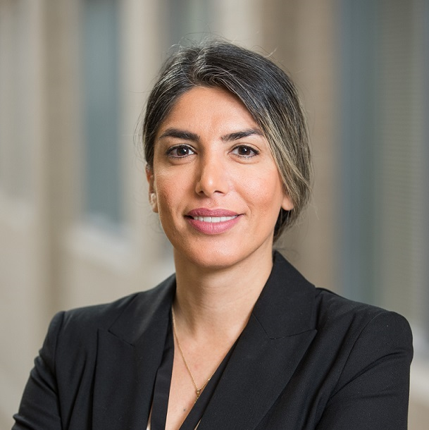
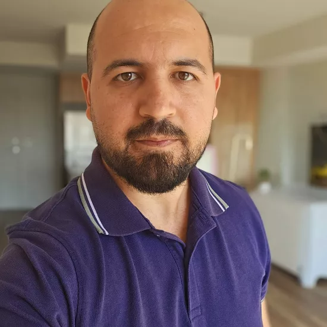
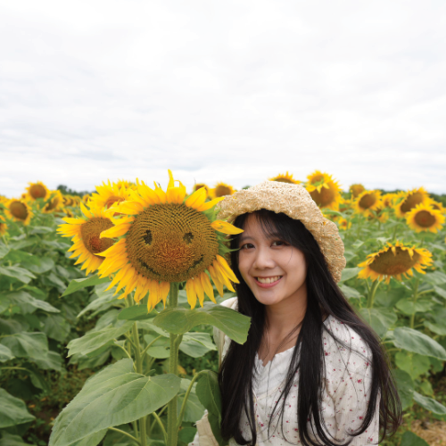
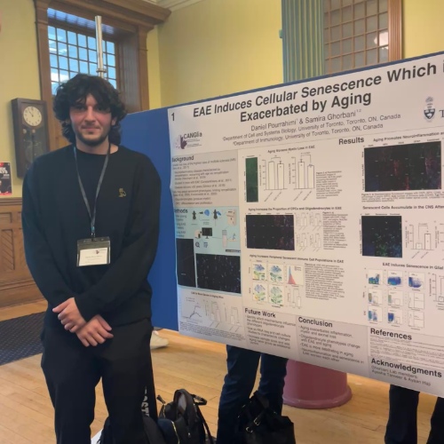
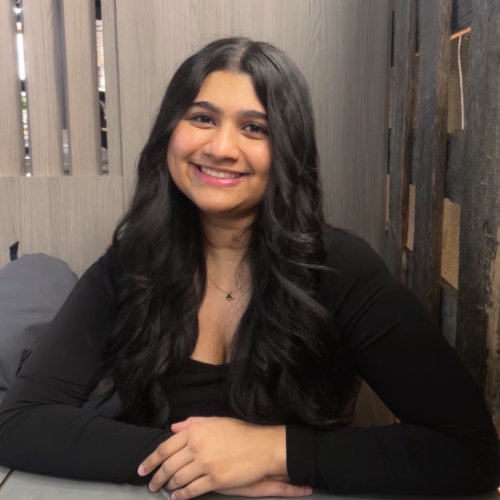
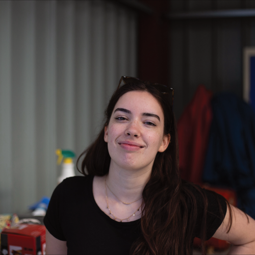
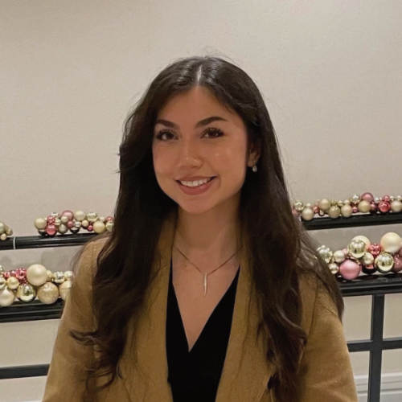

Dr. Ghorbani is an Assistant Professor at the University of Toronto Mississauga. She received her PhD in Immunology from Tehran University of Medical Sciences and completed her postdoctoral fellowship at the University of Calgary under the supervision of Dr. V. Wee Yong.
Contact information:Email: samira.ghorbani@utoronto.ca

Dr. Ghareghani earned his doctorate from Laval University in Canada, where his research focused on multiple sclerosis. He then completed a two-year postdoctoral fellowship in Alzheimer’s disease in the laboratory of Dr. Serge Rivest at CHUL Research Center. In May 2025, he joined our lab to continue his postdoctoral research, now focusing on regenerative capacity of CNS in multiple sclerosis.
Contact information:Email: m.ghareghani@utoronto.ca
His full list of publications can be found on his PubMed profile or Google Scholar profile.

Carol is a first-year PhD student in the Department of Immunology. Her research focuses on restoring the lipid homeostasis of lipid-laden or foamy microglia identified at the rim of chronic active lesions in progressive multiple sclerosis.
Contact information:Email: carol.shiu@mail.utoronto.ca

Daniel is a masters student who completed his HBSc at UTM majoring in biology for health sciences. He started in the lab as a BIO481 thesis student focusing on aging in MS, primarily through changes in oligodendrocyte populations and senescent phenotypes.
Contact information:
Jia is a master’s student who completed her HBSc at the University of Toronto St. George campus with a double major in Neuroscience and Cell & Molecular Biology (Focus in Stem Cells and Developmental Biology), along with a minor in Physiology. She completed her undergraduate research thesis and UTEA placement in the Peever Lab, where she studied SLD astrocytic involvement in the regulation of REM sleep. At the Ghorbani Lab, her research focuses on telomere shortening in oligodendrocyte precursor cells and its impact on remyelination in multiple sclerosis mouse models.
Contact information:Email: jia.vedante@mail.utoronto.ca

Lauren is a fourth-year undergraduate student pursuing an HBSc in Neurosciences and Biology for Health Sciences at the University of Toronto after transferring from University of Amsterdam. She joined the Ghorbani Lab in May 2026 as a BIO399 ROP student. Her research focuses on quantifying senescent and immune cells in white matter lesions versus normal appearing white matter to identify lesion-specific differences.

Mona is an undergraduate student at UTM, pursuing a Specialist in Biology with a minor in Chemistry, and entering her fourth year. She began in the lab as a volunteer and is now a research student. Her work focuses on how aging mechanisms such as cellular senescence may impair myelin repair. Former volunteer